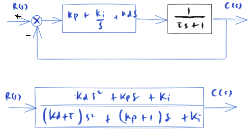
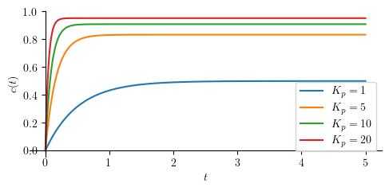
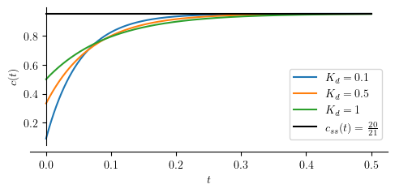
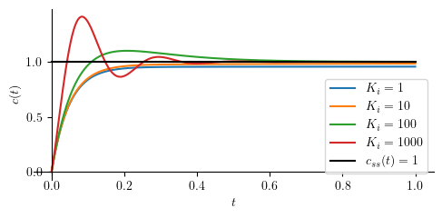

First-order system and PID-control#
Preparations#
from IPython.core.display import HTML
import numpy as np
import matplotlib.pyplot as plt
plt.rcParams.update({
"text.usetex": True,
"font.family": "Helvetica",
"font.size": 10,
})
from sympy import *
from sympy.plotting import plot
from mathprint import *
from sympy.physics.control.lti import TransferFunction
Kp, Ki, Kd = symbols('K_p K_i K_d', positive=True)
t = symbols('t', positive=True)
s = symbols('s', complex=True)
tau = symbols('tau', positive=True)
omega = symbols("omega", positive=True)
omega_n = symbols('omega_n', positive=True)
zeta = symbols('zeta', positive=True)
def laplace(f):
F = laplace_transform(f, t, s, noconds=True)
return F
def ilaplace(F):
f = inverse_laplace_transform(F, s, t)
return f
def frac_to_tf(frac):
return TransferFunction(fraction(frac)[0], fraction(frac)[1], s)
System and the control equations#

H = 1 / (tau*s+1)
G = Kp + Ki/s + Kd*s # PID-control
Q = factor(((G*H / (1 + G*H))))
print("first-order system:")
mprint("H(s)=", latex(H))
print("PID-control:")
mprint("G(s)= ", latex(G))
print("the resulting closed-loop system:")
mprint("Q(s)=", latex(Q))
first-order system:
PID-control:
the resulting closed-loop system:
First order system with P-control#
Closed-loop transfer function:
Qp = simplify(Q.subs(([Kd, 0],
[Ki, 0])))
mprint(latex(Qp))
The controlled system remains a first order system. \(K_p\) changes the pole location. New pole location:
Closed-loop poles and zeros#
f = frac_to_tf(Qp)
zerosp = f.zeros()
polesp = f.poles()
print("closed-loop zeros:")
mprint(latex(zerosp))
print("closed-loop poles:")
mprint(latex(polesp))
closed-loop zeros:
closed-loop poles:
Step response#
Let us define some numerical values for our simulations.
tau_ = 1
Kp_ = [1, 5, 10, 20]
We simply perform an inverse Laplace operation to \(C(s)\) and obtain \(c(t)\) as the result. Additionally, we will also compute the steady state-value for the output (\(c_{ss}\)).
cp = ilaplace(Qp * 1/s)
cssp = simplify(limit(cp, t, 'oo'))
c0p = limit(cp, t, 0)
mprintb("c(t) = ", latex(cp))
mprintb("c_{ss} = ", latex(cssp))
p = [plot(cp.subs(([tau, tau_], [Kp, Kp_[j]])), (t, 0, 5), size=(5, 2.5), ylabel='$c(t)$', show=False, legend=True) for j in range(len(Kp_))]
for j in range(len(p)):
p[j][0].label = "$K_p=" + str(Kp_[j]) + "$"
if j > 0:
p[0].append(p[j][0])
p[0].show()

First-order system with PD-control#
Closed-loop transfer function:
Qpd = simplify(Q.subs(Ki, 0))
mprint(latex(Qpd))
Closed-loop poles and zeros#
f = frac_to_tf(Qpd)
zerospd = f.zeros()
polespd = f.poles()
print("closed-loop zeros:")
mprint(latex(zerospd))
print("closed-loop zeros:")
mprint(latex(polespd))
closed-loop zeros:
closed-loop zeros:
Step response#
We simply perform an inverse Laplace operation to \(C(s)\) and obtain \(c(t)\) as the result. Additionally, we will also compute the steady state-value for the output (\(c_{ss}\)).
A phenomenon that can be observed in a derivative control is the “kick” that happens when a step input is applied to the controlled system. Because of the kick, system output does not start from zero.
cpd = logcombine(ilaplace(Qpd * 1/s))
csspd = limit(cpd, t, 'oo')
c0pd = limit(cpd, t, 0)
mprintb("c(t) = ", latex(cpd))
mprintb("c_{ss} = ", latex(csspd))
mprintb("c(0) = ", latex(c0pd))
Next, we set up arbitrary numerical values to some parameters and run sumulate the controlled system.
tau_ = 1
Kp_ = 20
Kd_ = [0.1, 0.5, 1]
p = [plot(cpd.subs(([tau, tau_], [Kp, Kp_],[Kd, Kd_[j]])), (t, 0, .5), size=(5, 2.5), ylabel='$c(t)$', show=False, legend=True, axis_center=[0,0]) for j in range(len(Kd_))]
for j in range(len(p)):
p[j][0].label = "$K_d=" + str(Kd_[j]) + "$"
if j > 0:
p[0].append(p[j][0])
q = plot(csspd.subs(Kp, Kp_), (t, 0, .5), line_color='k', show=False)
q[0].label = "$ c_{ss} (t) = " + latex(csspd.subs(Kp, Kp_)) + " $"
p[0].append(q[0])
p[0].show()

First-order system with PI-control#
Closed-loop transfer function:
Qpi = simplify(Q.subs(Kd, 0))
mprintb(latex(Qpi))
Closed-loop poles and zeros#
f = frac_to_tf(Qpi)
zerospi = f.zeros()
polespi = f.poles()
print("closed-loop zeros:")
mprint(latex(zerospi))
print("closed-loop zeros:")
mprint(latex(polespi))
closed-loop zeros:
closed-loop zeros:
Step response#
We simply perform an inverse Laplace operation to \(C(s)\) and obtain \(c(t)\) as the result. Additionally, we will also compute the steady state-value for the output (\(c_{ss}\)).
cpi = ilaplace(Qpi * 1/s)
cpi = sum([simplify(cpi.args[j]) for j in range(len(cpi.args))])
csspi = limit(cpi, t, 'oo')
mprintb("c(t) = ", latex(cpi))
mprintb("c_{ss} = ", latex(csspi))
Next, we set up arbitrary numerical values to some parameters and run sumulate the controlled system.
tau_ = 1
Kp_ = 20
Ki_ = [1, 10, 100, 1000]
Kd_ = 0
p = [plot(cpi.subs(([tau, tau_], [Kp, Kp_],[Ki, Ki_[j]])), (t, 0, 1), size=(5, 2.5), ylabel='$c(t)$', show=False, legend=True) for j in range(len(Ki_))]
for j in range(len(p)):
p[j][0].label = "$K_i=" + str(Ki_[j]) + "$"
if j > 0:
p[0].append(p[j][0])
q = plot(csspi.subs(Kp, Kp_), (t, 0, 1), line_color='k', show=False)
q[0].label = "$ c_{ss} (t) = " + latex(csspi.subs(Kp, Kp_)) + " $"
p[0].append(q[0])
p[0].show()

First-order system with PID-control#
f = frac_to_tf(Q)
zerospid = f.zeros()
polespid = f.poles()
print("closed-loop zeros:")
mprint(latex(zerospid))
print("closed-loop poles:")
mprint(latex(polespid))
closed-loop zeros:
closed-loop poles:
cpid = logcombine(ilaplace(Q * 1/s))
csspid = limit(cpid, t, 'oo')
c0pid = limit(cpid, t, 0)
mprintb("c(t) = ", latex(cpid))
mprintb("c_{ss} = ", latex(csspid))
mprintb("c(0) = ", latex(c0pid))
Summary#
from pandas import DataFrame
from IPython.display import Markdown
def makelatex(args):
return ["${}$".format(latex(a)) for a in args]
descs = ["P-control",
"PD-control",
"PI-control",
"PID-control"]
css_label = [cssp, csspd, csspi, csspid]
c_label = [cp, cpd, cpi, cpid]
cl_zeros = [zerosp, zerospd, zerospi, zerospid]
cl_poles = [polesp, polespd, polespi, polespid]
kicks = [0, c0pd, 0, c0pid]
dic = {'Controls': descs,
'$c_{ss}$': makelatex(css_label),
'Zeros' : makelatex(cl_zeros),
'Poles' : makelatex(cl_poles),
'Kicks (step input)' : makelatex(kicks)}
df = DataFrame(dic)
Markdown(df.to_markdown(index=False))
Controls |
\(c_{ss}\) |
Zeros |
Poles |
Kicks (step input) |
|---|---|---|---|---|
P-control |
\(\frac{K_{p}}{K_{p} + 1}\) |
\(\left[ \right]\) |
\(\left[ - \frac{K_{p} + 1}{\tau}\right]\) |
\(0\) |
PD-control |
\(\frac{K_{p}}{K_{p} + 1}\) |
\(\left[ - \frac{K_{p}}{K_{d}}\right]\) |
\(\left[ - \frac{K_{p} + 1}{K_{d} + \tau}\right]\) |
\(\frac{K_{d}}{K_{d} + \tau}\) |
PI-control |
\(1\) |
\(\left[ - \frac{K_{i}}{K_{p}}\right]\) |
\(\left[ - \frac{K_{p} + 1}{2 \tau} - \frac{\sqrt{- 4 K_{i} \tau + K_{p}^{2} + 2 K_{p} + 1}}{2 \tau}, \ - \frac{K_{p} + 1}{2 \tau} + \frac{\sqrt{- 4 K_{i} \tau + K_{p}^{2} + 2 K_{p} + 1}}{2 \tau}\right]\) |
\(0\) |
PID-control |
\(1\) |
\(\left[ - \frac{K_{p}}{2 K_{d}} - \frac{\sqrt{- 4 K_{d} K_{i} + K_{p}^{2}}}{2 K_{d}}, \ - \frac{K_{p}}{2 K_{d}} + \frac{\sqrt{- 4 K_{d} K_{i} + K_{p}^{2}}}{2 K_{d}}\right]\) |
\(\left[ - \frac{K_{p} + 1}{2 \left(K_{d} + \tau\right)} - \frac{\sqrt{- 4 K_{d} K_{i} - 4 K_{i} \tau + K_{p}^{2} + 2 K_{p} + 1}}{2 \left(K_{d} + \tau\right)}, \ - \frac{K_{p} + 1}{2 \left(K_{d} + \tau\right)} + \frac{\sqrt{- 4 K_{d} K_{i} - 4 K_{i} \tau + K_{p}^{2} + 2 K_{p} + 1}}{2 \left(K_{d} + \tau\right)}\right]\) |
\(\frac{K_{d}}{K_{d} + \tau}\) |